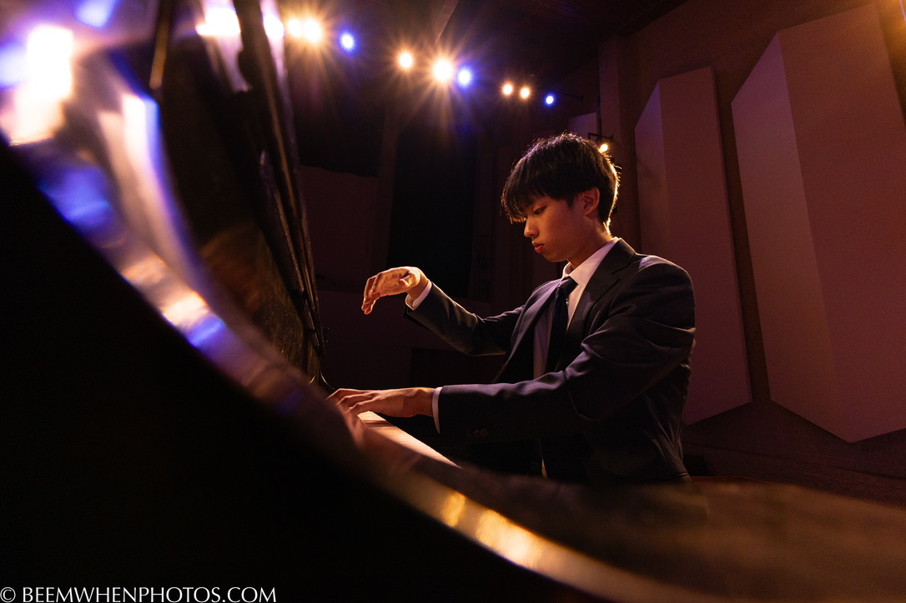

The Pianist. The Researcher.

I'm currently an undergraduate at Denison University, double majoring in Applied Mathematics and Music (Piano Performance), with minors in Machine Learning and Artificial Intelligence. Under the guidance of Dr. Sun Min Kim and Dr. Hana Chu, I continue to refine my artistry at the piano while exploring the mathematical structures that underpin both music and technology.
On the mathematics side, I'm fascinated by machine learning—especially how we can teach machines to interpret and generate sound in ways that feel authentically human. I'm currently developing a project in this area, and I look forward to sharing it soon.
As a Music Major at Denison University, I am currently studying under the guidance of Dr. Sun Min Kim and Dr. Hana Chu. Prior to my time at Denison, I spent three years studying with Dr. Alvin Zhu at The Tianjin Juilliard School.
Updates on June 2026
Academic Background
Denison University
B.S. in Applied Mathematics / B.A. in Music Performance
Minors in Machine Learning & AI.
The Tianjin Juilliard School
Music Development Program
Studied under Dr. Alvin Zhu.(Pre-College Faculty)
Curriculum Vitae
A comprehensive overview of my repertoire, academic projects, performances, and honors.
Download PDF